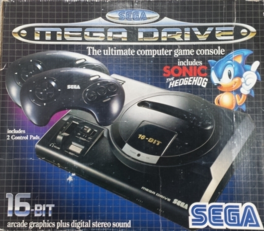

< Sega lanzó la sucesora de la Master System y fue por todo lo alto.
Una máquina con mejores gráficos, sonido y velocidad. Incorporó
una CPU de 32 bits montada sobre un bus de datos de 16, por lo que
su arquitectura fue finalmente de 16 bits. No tuvo demasiado éxito
en Japón, pero en América y Europa fue la líder indiscutible, incluso
estuvo por encima de la Super Nintendo (su principal competidora) en
estos continentes, a parte de tener un catálogo de juegos mucho más
extenso y variado. El gran público no le prestó demasiada atención
hasta que apareció Sonic the Hedgehog. Su principal atractivo eran sus
juegos directamente convertidos desde las recreativas. Gracias a la lucha
con la Super Nintendo podemos recordar la era de los 16 bits como
una de las más bonitas de la historia.
>
